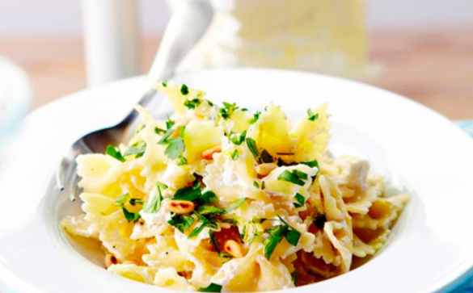

Pasta Gremolata met ricotta

-
500g farfelle
-
1 el pijnboompitten
-
1 teentje knoflook
-
1 citroenschil
-
250g ricotta
-
handje bladpeterselie
Ingrediënten
- Kook de pasta beetgaar in een ruime hoeveelheid gezouten water.
- Snipper de peterselie en de knoflook. Vermeng ze met de geraspte citroenschil.
- Schep de ricotta door de warme pasta en verdeel over de borden. Bestrooi met de gremolata en werk af met de pijnboompitten.